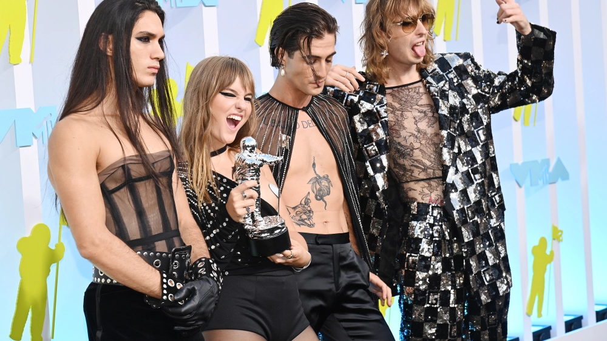

More
Måneskin, is an italian rock band who got their start up from Eurovision, a European song contest. In the picture, from left to right bassist Victoria De Angelis, guitarist Thomas Raggi, vocalist Damiano David and drummer Ethan Torchio. Contraty to their origin, the name Maneskin, translates to Moonlight in Danish.

"Vi conviene stare zitti e buoni"
- Winning Eurovision with their top song, Zitti e Buoni, shut up and be good. The italian band rose to stardom in the US. They are currently on their first north american tour!
| Show | Time |
|---|---|
| The Filmore | 11/28/2022 |
| The Filmore | 11/29/2022 |
| Hammertein Ballroom | 12/02/2022 |
| Hammertein Ballroom | 12/03/2022 |
Style
Måneskin for Gucci Aria. Capturing the revolutionary and joyful impetus of eros, the multi-platinum selling band Måneskin was personally chosen.
They wear gucci on red carpets and to all their concerts and have no problem intercating with the corwd, they even crowd surf at times. The small Italian band has become a new phenomenon across America and have recently been nominated for a grammy .
https://merch.maneskin.com